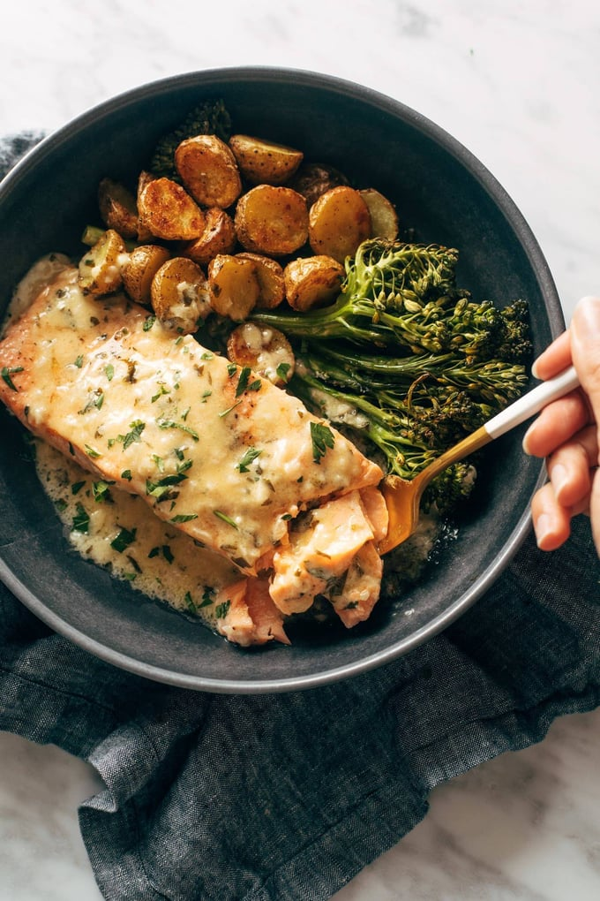

Salmon Dinner Recipe

Description:
Delicious baked salmon with crispy potatoes, broccoli,
and the most amazing life-changing lemon sauce smothered
on top of it all. This is restaurant bistro-style eating!
Baked salmon, simply salted, peppered, brushed with olive
oil, and baked to flaky perfection: absolutely.
And enter -> the herby, creamy, lemony lemon sauce.
Yes, yes, and y-e-s. Everything else is delicious, but
if we’re being honest, it really just serves in the supporting
role for this sauce.
For Sheet Pan
- 1 pound small gold potatoes, cut into bite sizes
- olive oil, garlic powder, salt, pepper
- 2-3 cups of broccoli florets
- 1-2 pounds of salmon cut into 2-4 filets
Lemon Herb Sauce
- 6-8 tablespoon butter
- 1-2 cloves of garlic, minced
- 1 shallot, minced
- 2-3 sprigs of fresh thyme
- 1/2 cup heavy cream
- 1/2 cup chicken broth
- juice of 1 lemon
- chopped fresh parsley or basil
- salt and pepper to taste
- Roast the Potatoes: Preheat the oven to 400 degrees.
Line a baking sheet with parchment. Add the potatoes
to the pan and toss with a little bit of olive oil,
garlic powder, salt, and pepper. Roast for 25 minutes
until lightly browned and delicious.
- Make the Life-Changingly Delicious Sauce: While the
potatoes are roasting, make your sauce. Melt the
butter over medium low heat (I usually start with 6
tablespoons and add the last two if needed once the
sauce is cooked). Add the garlic, shallot, and thyme
sprigs; sauté for 3-5 minutes until soft and fragrant.
Add broth and cream; bring to a low simmer. Let the
sauce hang out over low heat until it starts to
thicken enough to coat the back of a spoon. Remove
the thyme sprigs. Whisk in the lemon juice, stir in
the herbs, and season with salt and pepper.
Give it a taste.
- Bake the Salmon and Broccoli: Add the broccoli and
the salmon to the potato pan (keeping the potatoes on
there). Toss or brush with a little more oil, salt,
and pepper. Bake for another 10-15 minutes, until the
salmon is fully cooked – I like it to be *just* past
the point of translucent where it flakes apart very
easily but isn’t dried out.
- You’re Done: Serve salmon, potatoes, and broccoli with
big spoonfuls of sauce, more herbs, and more lemon
wedges. This is living.